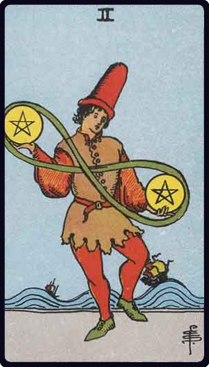

Upright Meaning
Flexible planning will help you balance competing responsibilities.
Pentacles · Balance
Two of Pentacles brings priorities, adaptability and time into focus. At its centre is a choice, pairing or balance through pentacles themes. Rather than treating the card as a fixed prediction, use these themes to describe what may be happening and what deserves your attention.

Keywords: priorities, adaptability, time
Flexible planning will help you balance competing responsibilities.
Too many demands may be creating instability. Simplify and prioritise.
For this card, start with the question you actually asked. Then notice how priorities or adaptability changes the meaning. The same card can feel supportive, challenging or neutral depending on the position, surrounding cards and real circumstances.
In love and relationships, consider how priorities is being expressed between people. Reliability, practical effort and consistency can reveal more than promises alone. Ask whether the card describes a feeling, a behaviour, a relationship pattern or a choice that needs to be made.
For work, study or projects, use Two of Pentacles to examine adaptability and time. Look for the real-world action, resource or habit that can make the situation more stable. A useful question is: what would a realistic next step look like if I acted on the card's theme without overinterpreting it?
For personal growth, explore the relationship between priorities and adaptability. Notice one habit, reaction or belief that matches the card, then imagine a healthier or more deliberate version of it. Small observations are often more useful than trying to force a dramatic change.
Let the artwork speak before you reach for a definition. Notice the visual detail that catches your attention first, then connect it to priorities, adaptability or time. Record your own impression and compare it with the traditional meaning. This keeps intuition involved without treating every symbol as having only one possible answer.
If Two of Pentacles appears in a reading, try this: name the strongest theme, connect it to the position in the spread, and identify one action or observation you can test in real life. An upright card does not guarantee an outcome; it describes an energy or perspective you can explore.
Compare this card with another card, save it to your favourites, or record your own interpretation in the journal.